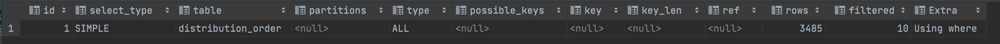

1.1. Explain执行计划

id:选择标识符
sql执行的顺序标识，如果是子查询，id的序号会递增，id值越大优先级越高，越先被执行
select_type:表示查询的类型。
(1) SIMPLE(简单SELECT，不使用UNION或子查询等)
(2) PRIMARY(子查询中最外层查询，查询中若包含任何复杂的子部分，最外层的select被标记为PRIMARY)
(3) UNION(UNION中的第二个或后面的SELECT语句)
(4) DEPENDENT UNION(UNION中的第二个或后面的SELECT语句，取决于外面的查询)
(5) UNION RESULT(UNION的结果，union语句中第二个select开始后面所有select)
(6) SUBQUERY(子查询中的第一个SELECT，结果不依赖于外部查询)
(7) DEPENDENT SUBQUERY(子查询中的第一个SELECT，依赖于外部查询)
(8) DERIVED(派生表的SELECT, FROM子句的子查询)
(9) UNCACHEABLE SUBQUERY(一个子查询的结果不能被缓存，必须重新评估外链接的第一行)
table:输出结果集的表
显示这一步所访问数据库中表名称（显示这一行的数据是关于哪张表的），可能是简称
type:表示表的连接类型
对表访问方式，表示MySQL在表中找到所需行的方式，又称“访问类型”。
常用的类型有： ALL、index、range、 ref、eq_ref、const、system、NULL（从左到右，性能从差到好）
ALL：Full Table Scan， MySQL将遍历全表以找到匹配的行
index: Full Index Scan，index与ALL区别为index类型只遍历索引树
range:只检索给定范围的行，使用一个索引来选择行
ref: 表示上述表的连接匹配条件，即哪些列或常量被用于查找索引列上的值
eq_ref: 类似ref，区别就在使用的索引是唯一索引，对于每个索引键值，表中只有一条记录匹配，简单来说，就是多表连接中使用primary key或者 unique key作为关联条件
const、system: 当MySQL对查询某部分进行优化，并转换为一个常量时，使用这些类型访问。如将主键置于where列表中，MySQL就能将该查询转换为一个常量，system是const类型的特例，当查询的表只有一行的情况下，使用system
NULL: MySQL在优化过程中分解语句，执行时甚至不用访问表或索引，例如从一个索引列里选取最小值可以通过单独索引查找完成。
possible_keys:表示查询时，可能使用的索引
指出MySQL能使用哪个索引在表中找到记录，查询涉及到的字段上若存在索引，则该索引将被列出，但不一定被查询使用（该查询可以利用的索引，如果没有任何索引显示 null）
该列完全独立于EXPLAIN输出所示的表的次序。这意味着在possible_keys中的某些键实际上不能按生成的表次序使用。
如果该列是NULL，则没有相关的索引。在这种情况下，可以通过检查WHERE子句看是否它引用某些列或适合索引的列来提高你的查询性能。如果是这样，创造一个适当的索引并且再次用EXPLAIN检查查询
key:表示实际使用的索引
key列显示MySQL实际决定使用的键（索引），必然包含在possible_keys中
如果没有选择索引，键是NULL。要想强制MySQL使用或忽视possible_keys列中的索引，在查询中使用FORCE INDEX、USE INDEX或者IGNORE INDEX。
key_len:索引字段的长度
表示索引中使用的字节数，可通过该列计算查询中使用的索引的长度（key_len显示的值为索引字段的最大可能长度，并非实际使用长度，即key_len是根据表定义计算而得，不是通过表内检索出的）
不损失精确性的情况下，长度越短越好
ref:列与索引的比较
列与索引的比较，表示上述表的连接匹配条件，即哪些列或常量被用于查找索引列上的值
rows:扫描出的行数(估算的行数)
估算出结果集行数，表示MySQL根据表统计信息及索引选用情况，估算的找到所需的记录所需要读取的行数
Extra:执行情况的描述和说明
Using where:不用读取表中所有信息，仅通过索引就可以获取所需数据，这发生在对表的全部的请求列都是同一个索引的部分的时候，表示mysql服务器将在存储引擎检索行后再进行过滤
Using temporary：表示MySQL需要使用临时表来存储结果集，常见于排序和分组查询，常见 group by ; order by
Using filesort：当Query中包含 order by 操作，而且无法利用索引完成的排序操作称为“文件排序”
Using join buffer：改值强调了在获取连接条件时没有使用索引，并且需要连接缓冲区来存储中间结果。如果出现了这个值，那应该注意，根据查询的具体情况可能需要添加索引来改进能。
Impossible where：这个值强调了where语句会导致没有符合条件的行（通过收集统计信息不可能存在结果）。
Select tables optimized away：这个值意味着仅通过使用索引，优化器可能仅从聚合函数结果中返回一行
No tables used：Query语句中使用from dual 或不含任何from子句